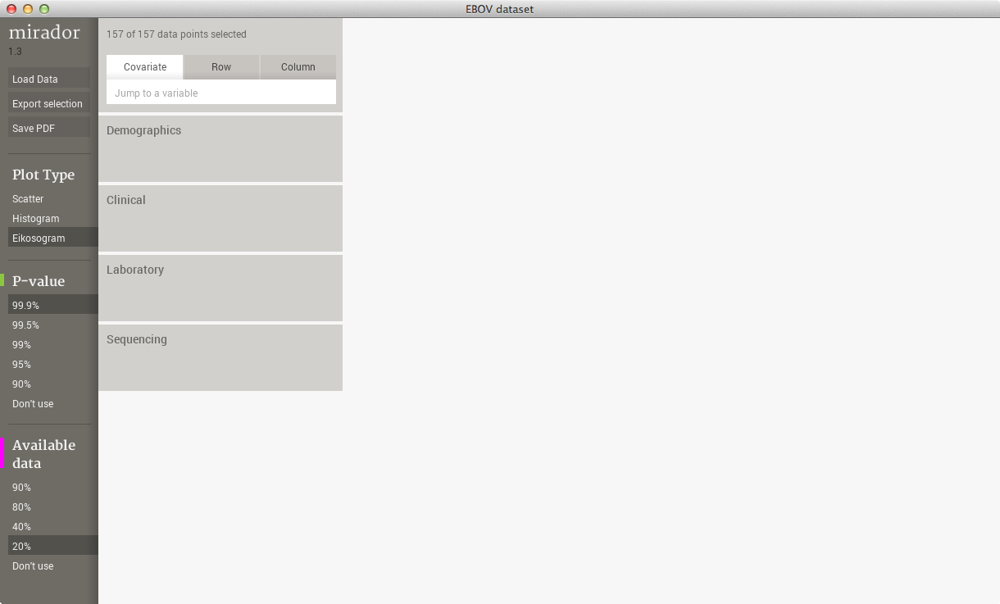

mirador
Ebola Data Release
The 2014 Ebola Outbreak
Since March of 2014, the world has witnessed the largest outbreak of Ebola Virus Disease (EVD) in history, which only now shows signs of receding. According to the latest updates from the World Health Organization, more than 20,000 cases and over 8,000 deaths have been reported, with most of them having took place in the West African nations of Sierra Leone, Guinea, and Liberia.
Open access to genetic and clinical data is crucial to understand how Ebola spreads among the human population, to characterize the symptoms predicting mortality, and hopefully to develop an effective vaccine and better patient treatment and care. These goals can only be achieved through active collaboration between goverments, scientists, doctors, humanitarian organizations, and the general public.
The Sabeti Lab at Harvard University and the Broad Institute publicly released the viral sequences for the first 78 Ebola patients in Sierra Leone back in July. Since then, the group led by Robert Garry at Tulane University obtained complementary demographic and clinical metadata for many of those initial patients. Scientists at the Sabeti and Garry labs worked together in the analysis of that data, and the first results from the analysis were reported in the scientific literature. Here we are releasing the metadata with the hope that interested individuals from all over the world can examine it further and find other associations and trends that might have escaped our analysis and could help in the understanding of the disease.
Download the Data
The data is available in four packages: one containing the original raw files in Excel and VCF formats, the second containing the project files that can be loaded directly into Mirador, the third as a single CSV file that can read from virtually any tool, and the fourth as a Dataverse hosted on the Harvard Dataverse Network. The Mirador dataset and the CSV file were generated from the raw files using the scripts available here.
Raw Ebola Data (Excel and VCF formats)
Ebola Dataset for Mirador
Ebola Dataset as single CSV file
Ebola Dataverse hosted on the Harvard Dataverse Network
How to Use the Data
The raw data can be used with any software for statistical analysis, as well as the single CSV file. The Dataverse offers several options for descriptive statistics and advanced analysis. The Mirador dataset is specially formatted to load into the tool Mirador to conduct exploratory analysis and identify hypothesis of statistical association. A few ideas on the type of analysis that could be done with this data:
We used date and location information to establish transmission chains. Other questions to answer: Are mortality rates higher in some places more than others? Are there any symptoms that are more common in specific areas?
There are several correlations in this data that link outcome with several clinical and laboratory variables, such as temperature and viral load. What other associatons can be found? Which of these correlations indicate a real causal relationship?
Is it possible to use this data to build a predictive model of Ebola prognosis? What variables should be incorporated in such model and why?
Loading the Data into Mirador
In order to load this data in Mirador, we first need to download the zip package for Mirador from the appropriate link above, and then uncompress it. Opening the dataset from Mirador should result in a window similar to the following:
If we set the Ebola Diagnosis variable as a covariate, restricting the visualization only to Ebola-positive patients, and scrolling to Outcome in the rows and Temperature in the columns, we can inspect the dependency between these two variables, and see that all patients with temperatures over 38 degrees at admission eventually died:
Please check the tutorial videos and the manual to get more information on how to use Mirador to visualize and explore correlations in the Ebola data. You can also contact us by email with any questions related to Mirador and the data. Also, if you find a bug in the software, please report it in the github page.
More information
Ethics committees in Sierra Leone and the U.S. have approved the study of this clinical data, which has been collected as part of routine patient care and de-identified to protect patient privacy.
The image at the top of the page is an artistic rendition of the Congo River by Stephen Gire, where the shape of the river was created to take the form of the Ebola virus. Originally published here.